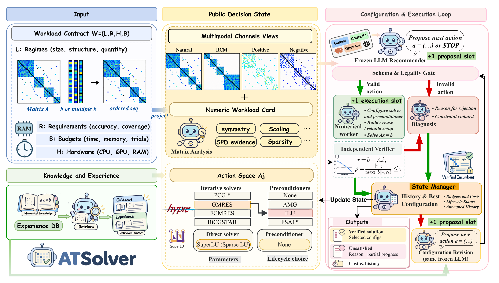

SCIENTIFIC COMPUTINGUnder review · ICLR 2027
ATSolver: Agentic Tuning of Sparse Linear Solvers with Numerical Feedback

An LLM-guided autotuner for sparse linear solvers that combines numerical verification, matrix structure, retrieval, and execution memory. Improved solve success from 61.0% to 71.4% across 105 runs under a six-proposal budget.